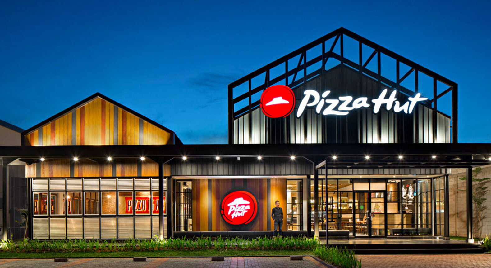
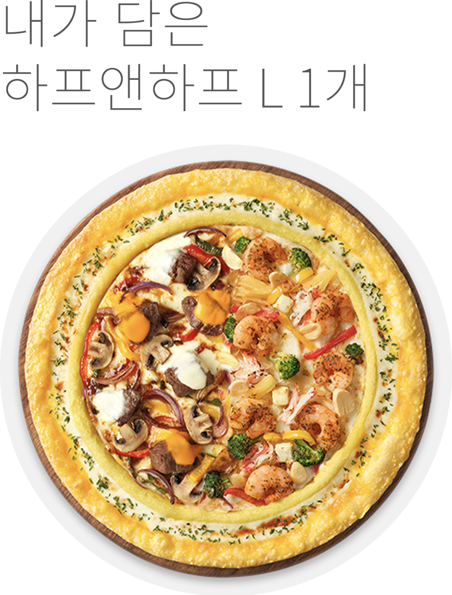
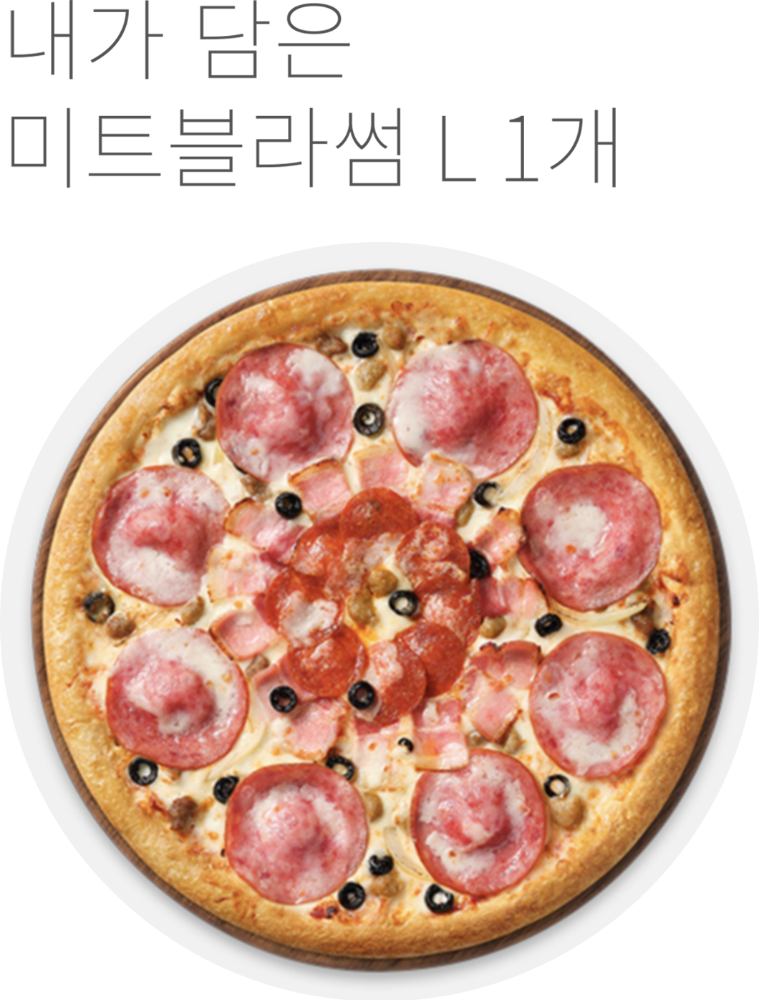
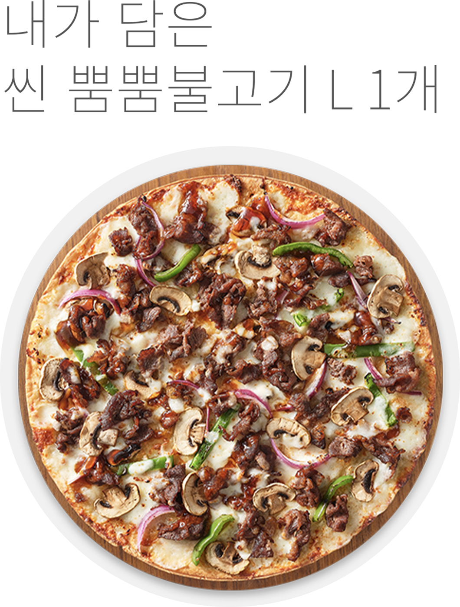
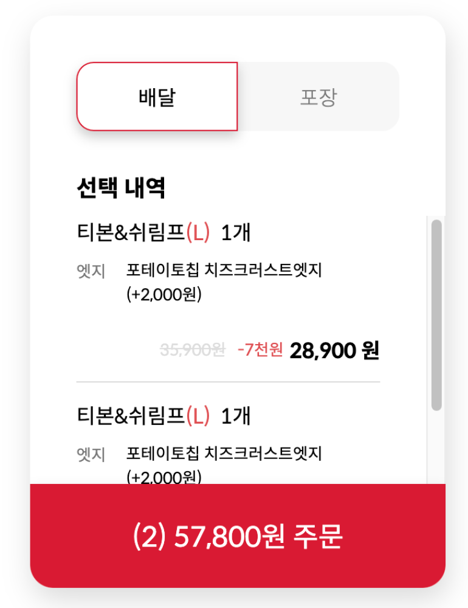
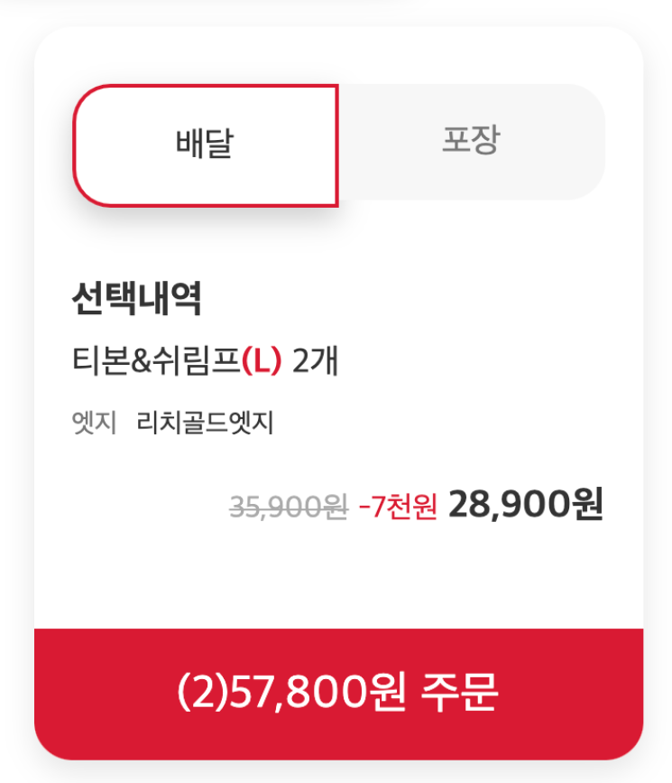

Slick-slider Plugin
편리하고 빠르게 작업할 수 있는 Slick-slider Plugin을 이용해 현재 진행하고 있는 이벤트의 배너를 직관적으로 보여주었습니다.

편리하고 빠르게 작업할 수 있는 Slick-slider Plugin을 이용해 현재 진행하고 있는 이벤트의 배너를 직관적으로 보여주었습니다.
Swiper Plugin을 가져와 적용하여 내가 추가한 피자 목록을 스와이프 하여 이미지와 함께 볼 수 있도록 하였습니다.



기존 사이트에서는 새로 피자를 추가할 시 추가한 내용이 장바구니 하단으로 쌓여 지금 추가한 피자가 어떤 피자인지 바로 알아보기 어려웠습니다. 또, 똑같은 피자를 눌러도 ‘2개’가 아닌 동일한 이름으로 1개, 1개, 1개,... 연달아 추가됨을 발견할 수 있었습니다.


각 토핑 정보와 이미지를 JSON으로 뿌려주어 후에 어떤 토핑이 추가되어도 JSON 파일에만 기입하면 자동으로 등록될 수 있도록 작업했습니다. 체크박스는 img src를 찾아 변경해 주었고 토핑, 사이드, 음료 목록은 slick-slider 사용해 넘겨볼 수 있게 하였습니다.
윈도우 하단에 주문 바를 픽스 시켜놓아 추가한 사이드와 음료를 실시간으로 확인할 수 있게 제작했습니다. 사이드와 음료를 추가할 시 처음 추가한 제품은 그 이름이, 2개 이상 추가될 시 한’외 1개’, ‘외 2개’ ...의 형태로 추가되도록 작업하였습니다. 각 옵션은 최대로 추가할 수 있는 개수가 정해져있고, 이를 넘길 시 안내 창이 뜨도록 하였습니다. 총 가격은 옵션들의 가격을 배열에 담고 제거하는 형식으로 계산해 주었습니다.
토핑 정보, 영양정보, 원산지 정보, 알레르기 정보는 클래스를 추가하고 없애는 방식으로 팝업 처리하였습니다. 동일한 형식이 반복되는 데이터는 JSON 사용하여 데이터를 뿌려주었습니다.